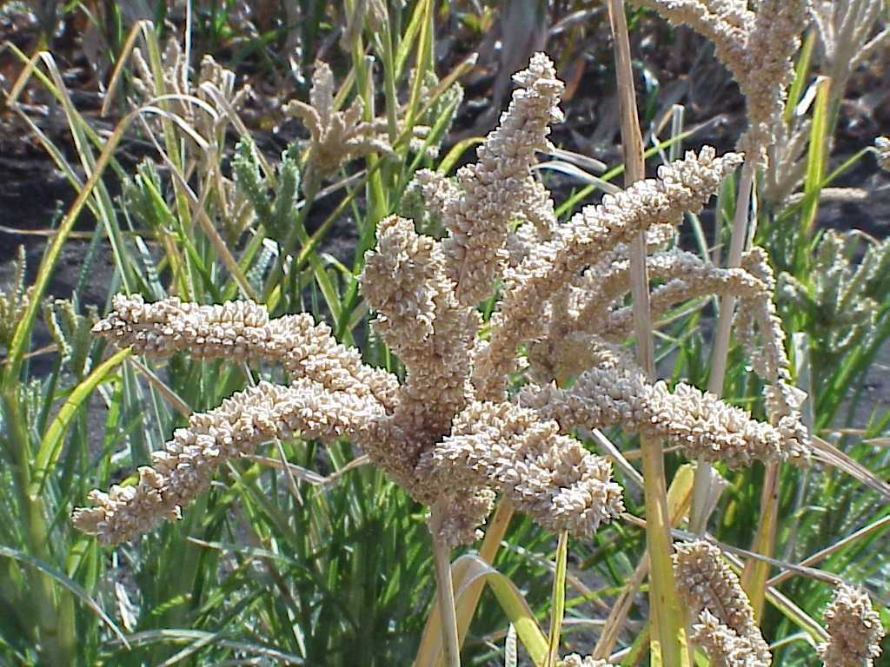
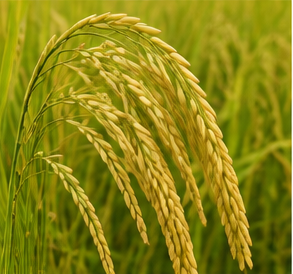
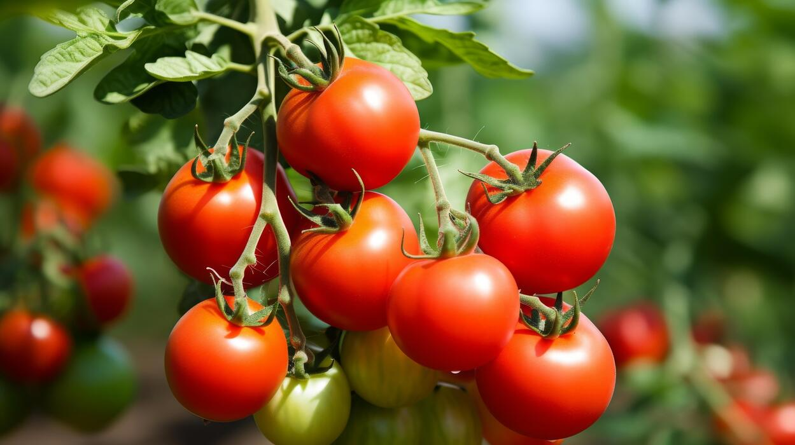

Welcome back!
 Loading location...
Loading location...
--°
Loading weather...
--%
Humidity
-- m/s
Wind
-- hPa
Pressure
-- km
Visibility
--°
Feels Like
Today's Agricultural Status
LIVE
Local Farm
--°C • --% Humidity
Crop Alerts
Moderate
Pest & Moisture Risk
Analyzing crop susceptibility for current humidity and temperature...
Rain & Weather Risk
Low
Clear Conditions
Calculating 24-48 hour rainfall probability and atmospheric trends...
Recommended Action
Recommended
Monitor + Irrigate
Preparing field operation advisory based on verified weather conditions...
24-Hour Weather Forecast
Loading forecast...
Analyzing seasonal crop recommendations...
AI Crop Advisor
Get location and weather-based advice for your crop.
AI Crop Advisor
Enter any crop name above for instant agronomic and weather-tailored guidance.
Nearby Markets / Mandi Prices
View Marketplace

Ragi (Finger Millet)
Bengaluru APMC
₹3,450 / Qtl
Stable Demand

Paddy (Rice)
Local Mandi
₹2,320 / Qtl
Government MSP Active

Tomato (Hybrid)
Kolar / APMC
₹1,850 / Qtl
High Daily Arrivals
Soybean
Regional Market
₹4,800 / Qtl
Strong Procurement
Latest Agricultural News
Read All News
Loading verified agricultural news...
Location Detected
Detecting...
...
Location accuracy: approximately 25 m
This location will be used to provide precise OpenWeather telemetry, automated crop alerts, and nearby market intelligence.
Krishi AI
Hello! I am your Krishi AI Advisor. How can I help you?
Settings & Preferences
Enable SMS & Weather Advisory notifications